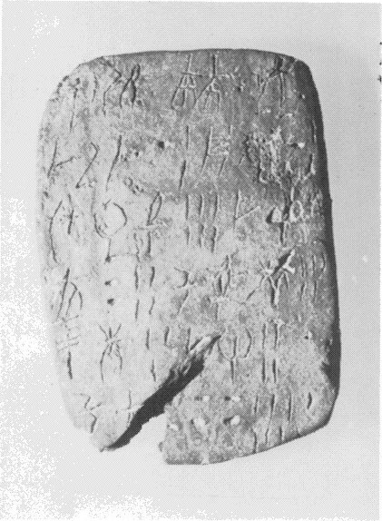
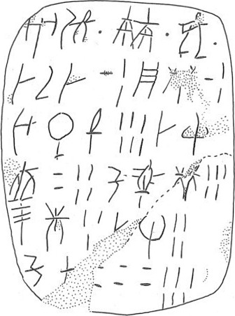

Schoep 2002, type Vb (combined, people+food)
HT Scribe
9
| side.line | statement | logogram | number | fraction |
| a.1 | A-DU | • *307+*307 {*638} • VIR • | ||
| a.2 | DA-RI-DA | 12 | ||
| a.2 | PA 3 -NI | 12 | ||
| a.3 | U-*325-ZA | 6 | ||
| a.3-4 | DA-SI-*118 | 24 | ||
| a.4 | KU-ZU-NI | 5 | ||
| a.5 | TE-KE | 3 | ||
| a.5 | DA -RE | 4 | ||
| a.6 | KU-RO[ | ] 66 | ||
| b.1 | KI-KI-RA-JA • | |||
| b.1-2 | KI-RE-TA 2 | 1 | ||
| b.2 | QE-KA | 1 | ||
| b.2 | PA | 1 | ||
| b.2-3 | TE-TU[ ] | 1 | ||
| b.3 | KA | 1 | ||
| b.3 | DI | 1 | ||
| b.3 | ME-ZA | 1 | ||
| b.4 | RE-DI-SE | 1 | ||
| b.4-5 | WA-DU-NI-MI | 1 | ||
| b.5 | MA-DI | 1 | ||
| b.5-6 | QA-*310-I | 1 |